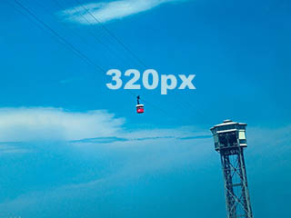
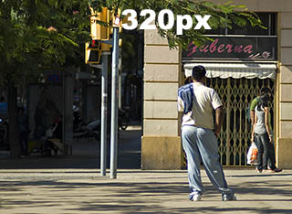
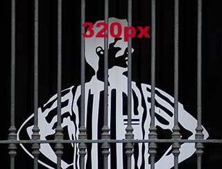
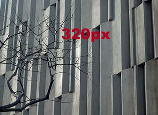
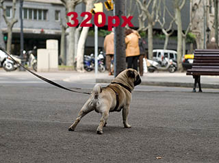
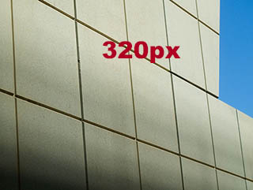
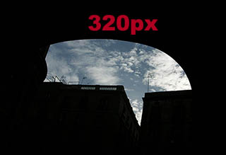

Cubo volador

Teleférico de Montjuïc. Imagen de archivo
Seductor barcelonés

Viandante parado en un semáforo. Imagen de archivo
Encerrado

Publicidad detrás de una verja. Imagen de archivo
Mordor

Edificio del Ayuntamiento de Barcelona. Imagen de archivo
Perro fofisano

Bulldog francés observando. Imagen de archivo
Rejilla

Rejilla en perspectiva. Imagen de archivo
Bocadillo

Silueta al atardecer de edificios barceloneses. Imagen de archivo